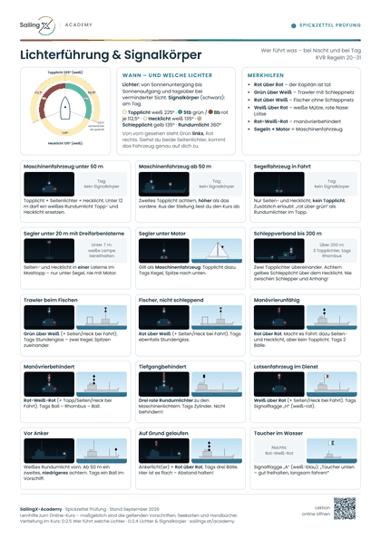
Lichterführung & Signalkörper
Sektoren der Positionslichter und die 15 wichtigsten Fahrzeuge mit Lichtern bei Nacht und Signalkörpern bei Tag.
Das Wichtigste aus dem Kurs – je Thema auf einer Seite. Zum Lernen für die Prüfung, zum Abhaken an Bord und als Notfallkarte zum Aufhängen. Jedes Blatt führt per QR-Code zurück zur passenden Lektion.
Das Wissen, das in der Prüfung und an Bord sofort sitzen muss – je Thema auf einer Seite.

Sektoren der Positionslichter und die 15 wichtigsten Fahrzeuge mit Lichtern bei Nacht und Signalkörpern bei Tag.
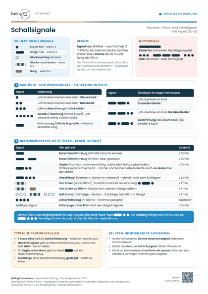
Alle Manöver-, Warn- und Nebelsignale als Punkt-Strich-Muster – mit Tonlängen und Merkhilfen.
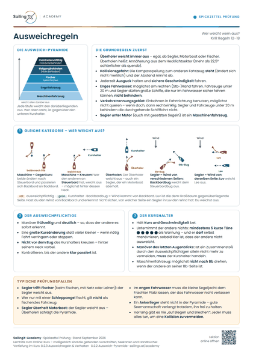
Ausweich-Pyramide, Maschine und Segel untereinander, Kurshalter und Manöver des letzten Augenblicks.
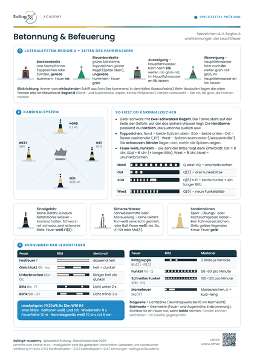
Lateral- und Kardinalzeichen, Einzelgefahr, sicheres Wasser und Sonderzeichen – mit Feuerkennungen.
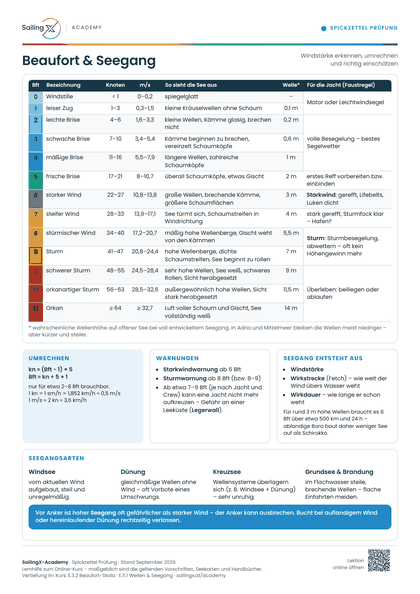
Die Beaufort-Skala 0–12 mit Knoten, Seegangsbild und Konsequenzen für die Jacht, dazu Seegangsarten.
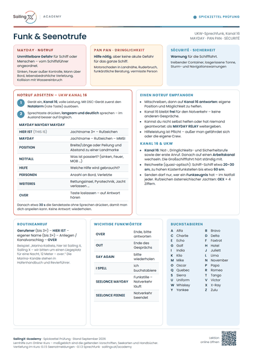
Die drei Kategorien auf Kanal 16, der Ablauf eines Notrufs, MAYDAY RELAY und das Buchstabieralphabet.
Zum Abhaken vor und während des Törns: von der Übernahme bis zum Schwerwetter.
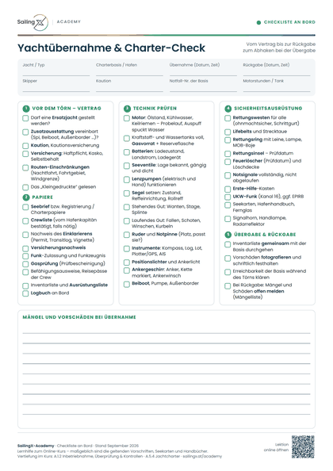
Papiere, Technik, Sicherheitsausrüstung und Inventar bei der Übernahme – mit Feldern für Mängel und Rückgabe.
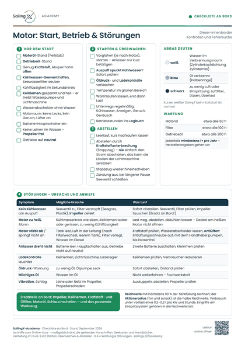
Kontrollen vor dem Start, Überwachung im Betrieb, richtiges Abstellen und die häufigsten Störungen.
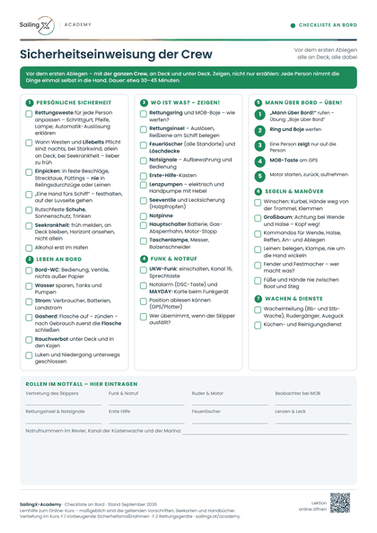
Was jede Person an Bord wissen und gezeigt bekommen muss – von der Rettungsweste bis zum Notruf.
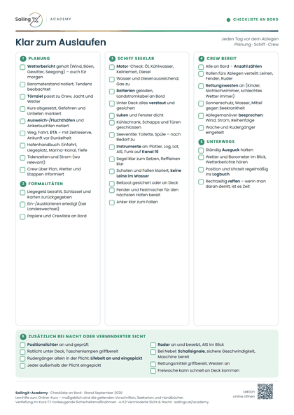
Tägliche Checkliste vor dem Ablegen: Wetter und Törnplan, Schiff seeklar, Crew bereit – plus Nachtfahrt.
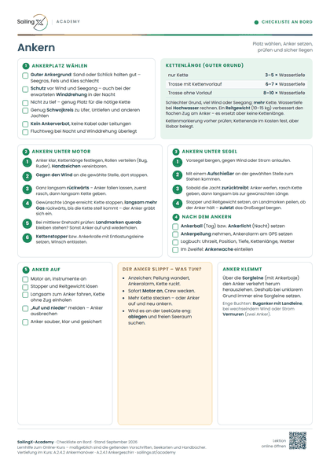
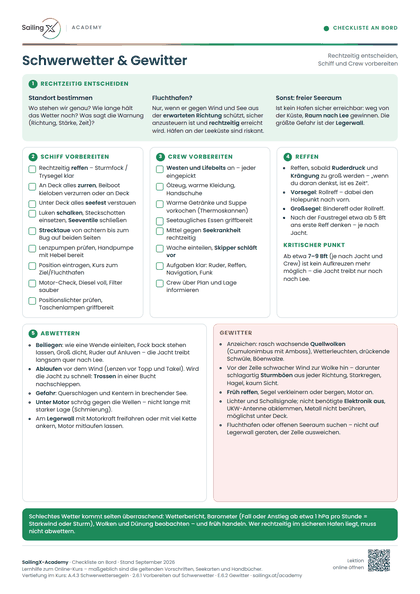
Fluchthafen oder abwettern, Schiff und Crew vorbereiten, reffen, abwettern – und das Verhalten im Gewitter.
Kurze Abläufe für den Ernstfall. Ausdrucken, laminieren und gut sichtbar beim Niedergang oder am Kartentisch aufhängen.
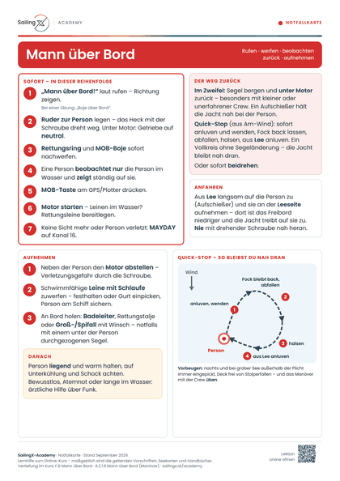
Sofortmaßnahmen in der richtigen Reihenfolge, der Weg zurück und die Bergung der Person.
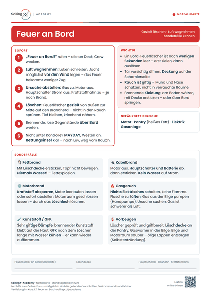
Löschtaktik mit dem Feuerlöscher und die Sonderfälle Fett, Kabel, Motor und Gas.
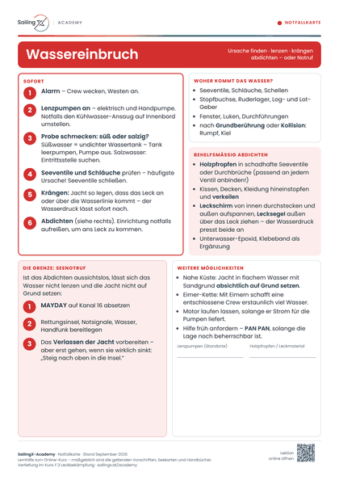
Systematisch gegen Wassereintritt: Ursache, Lenzen, Krängen, Abdichten und die Grenze zum Seenotruf.
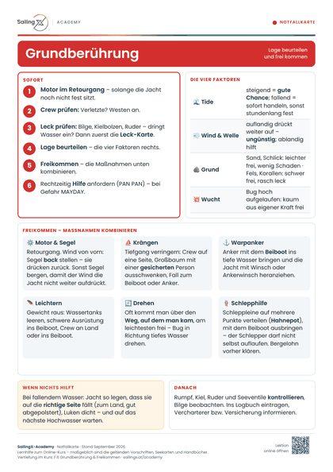
Die vier entscheidenden Faktoren und die Maßnahmen zum Freikommen – bis zur Schlepphilfe.
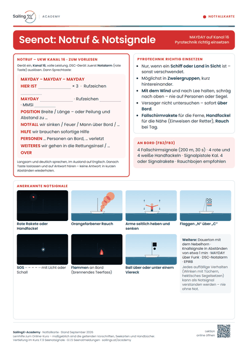
Der MAYDAY-Notruf zum Vorlesen, die anerkannten Notsignale und der richtige Einsatz der Pyrotechnik.
Blatt öffnen und auf „Drucken“ tippen – Format A4, Ränder „Keine“ bzw. „Standard“, Hintergrundgrafiken einschalten. Oder gleich das fertige PDF laden.
Laminiert halten sie Salzwasser aus. Gut sichtbar beim Niedergang, am Kartentisch oder neben dem Funkgerät aufhängen.
Die Checklisten haben Felder zum Eintragen – einmal pro Törn ausdrucken und gemeinsam mit der Crew abhaken.
Jedes Blatt hat unten einen QR-Code: Er öffnet die passende Lektion im Kurs – zum Nachlesen mit Animationen und Selbsttest.
Die Spickzettel sind eine Lernhilfe zum Online-Kurs. Maßgeblich sind die geltenden Vorschriften (KVR/Seestraßenordnung, nationale Bestimmungen), die amtlichen Seekarten und Handbücher sowie die Unterlagen deiner Prüfungsstelle.